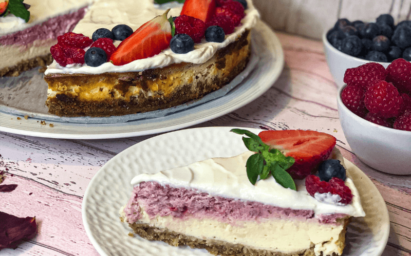

Fit Malinový Cheesecake

Kdo by nemiloval cheesecake? V každé cukrárně ho najdeme, akorát zpravidla obsahuje velké množství cukru a tuků. Pojď si s námi upéct cheesecake, který je zcela bez přidaného cukru a přesto chutná skvěle. Díky malinám je dezert osvěžující a zároveň dodají ještě lepší chuť.
Ingredience:
Korpus:
- 100 g mletých ovesných vloček nebo ovesné mouky
- 50 g celých ovesných vloček
- 50 g mletých ořechů (např. vlašské)
- 40 g rozpuštěného másla
- 100 ml mléka
Náplň:
- 3 vaničky polotučného tvarohu (750 g)
- 2 vejce
- sladidlo dle chuti (v receptu použito 80 g erythritolu a vanilkové flavdrops)
- 1 vanilkový pudink v prášku
- 150 g mražených nebo čerstvých malin
Potup:
- Připravíme si formu o rozměru 24 cm a vysteleme jí pečícím papírem.
- V míse důkladně smícháme všechny ingredience na korpus a rovnoměrně rozprostřeme do formy.
- Korpus dáme do předehřáté trouby na 180 stupňů a pečeme 15 minut. Poté necháme vychladnout.
- Všechny ingredience na náplň kromě malin si smícháme v misce.
- Polovinu množství oddělíme do jiné misky. Do té přidáme mražené nebo čerstvé maliny.
- Poté navrstvíme jednu polovinu náplně na vychladnutý korpus a na ni druhou polovinu náplně.
- Dáme opět do předehřáté trouby na 170 stupňů a pečeme 20 minut. Poté stáhneme troubu na 160 stupňů a pečeme dalších cca 35-40 minut. Kraje by mělý trochu zezlátnout a střed by se měl mírně třást
- Po upečení necháme vychladnout.
- Po vychladnutí můžeme ozdobit oslazeným tvarohem a čerstvým ovocem.
Home